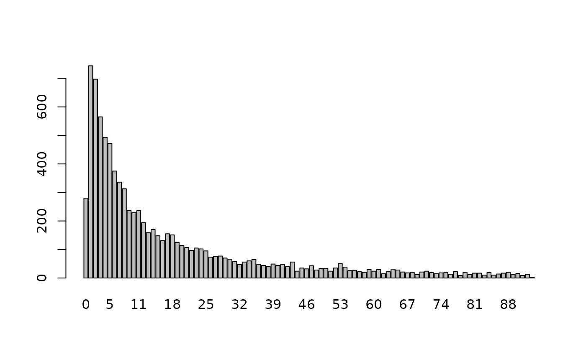
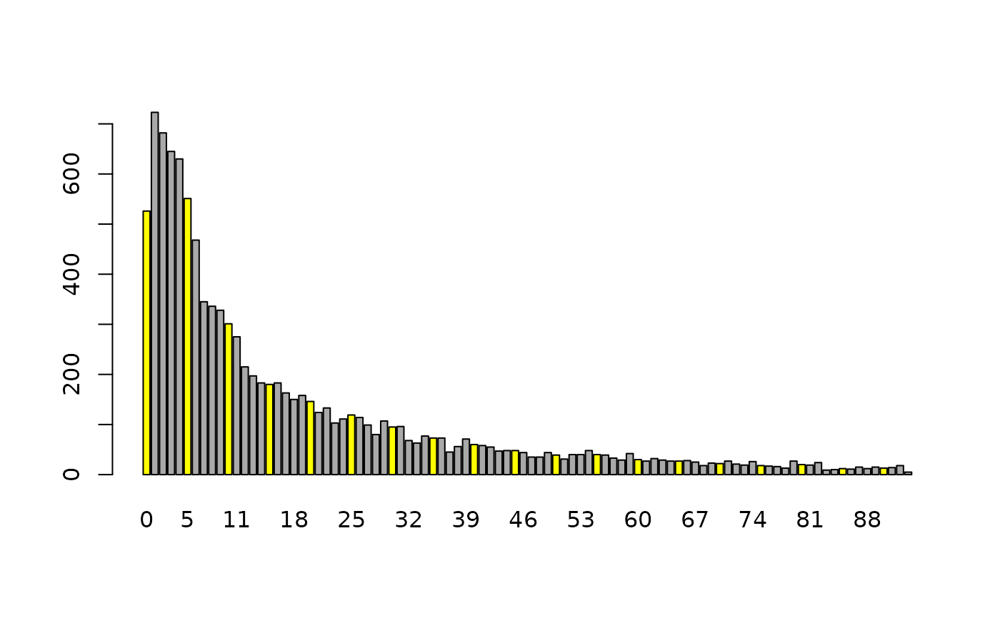
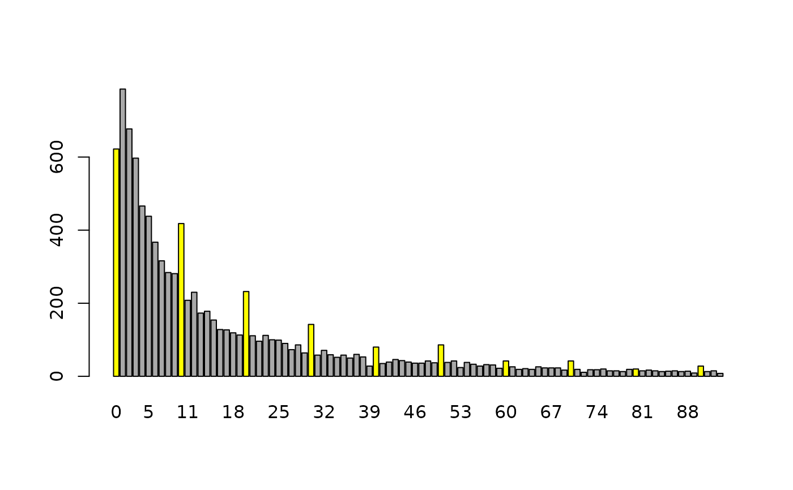
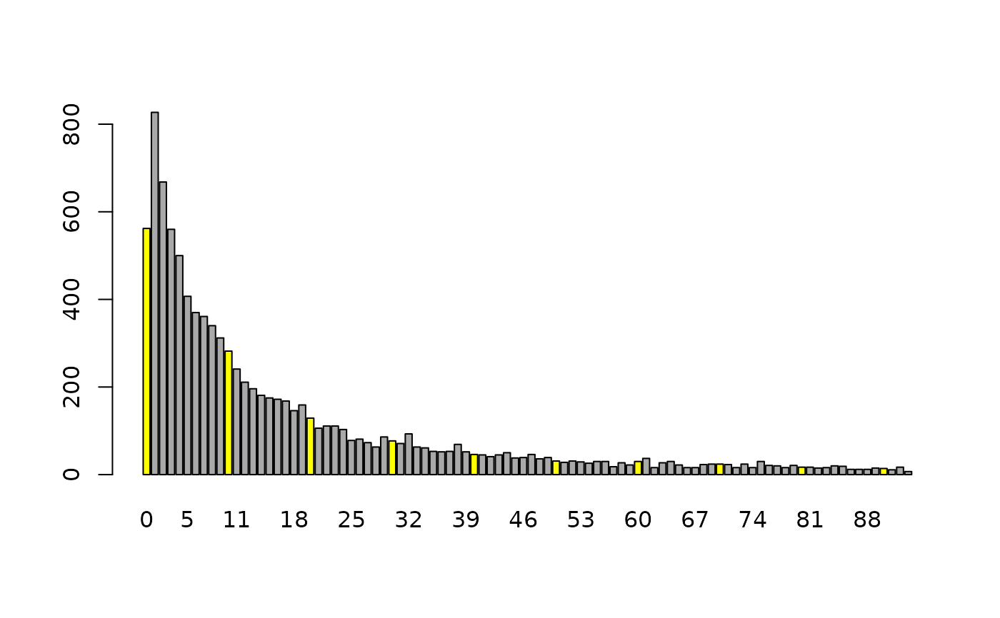
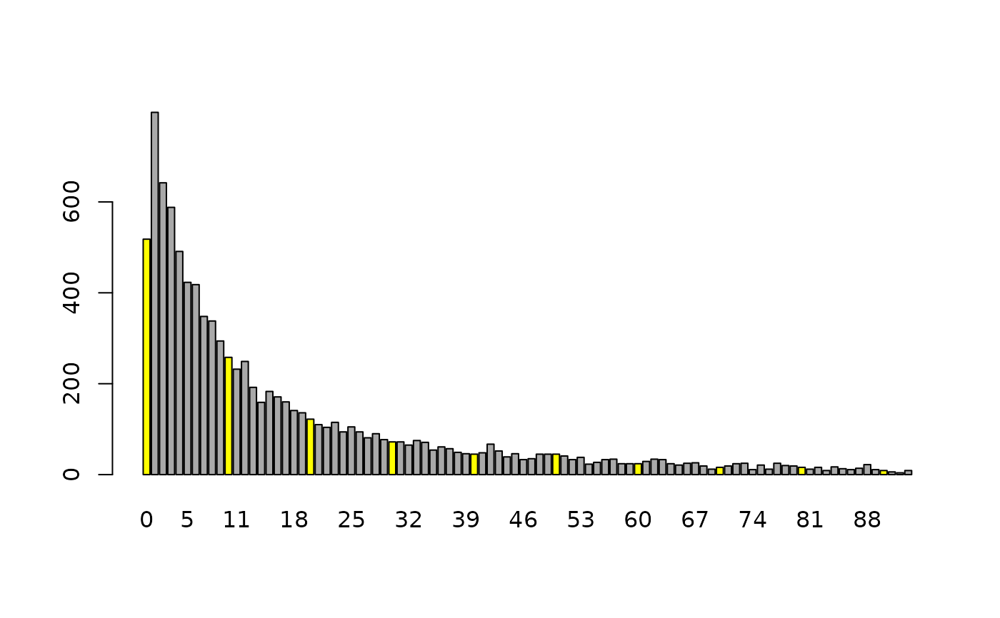
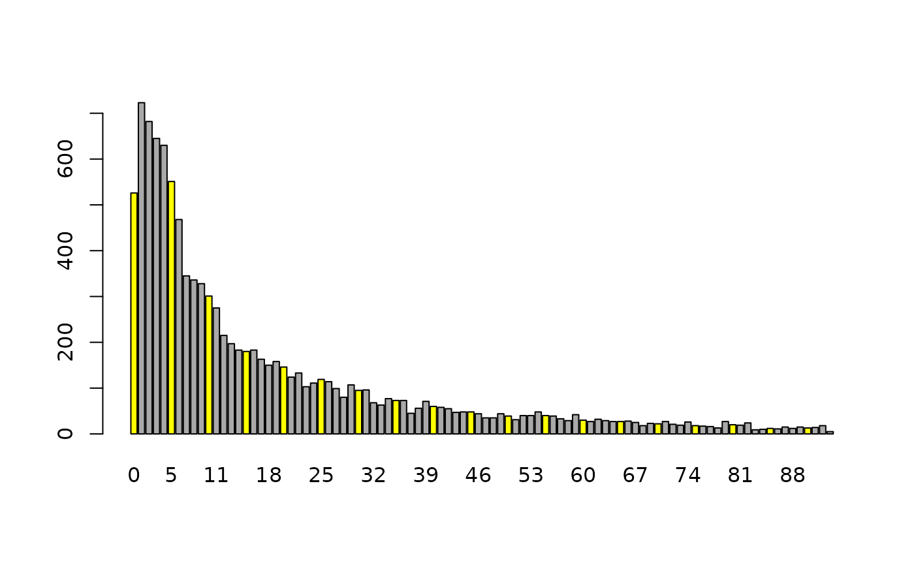
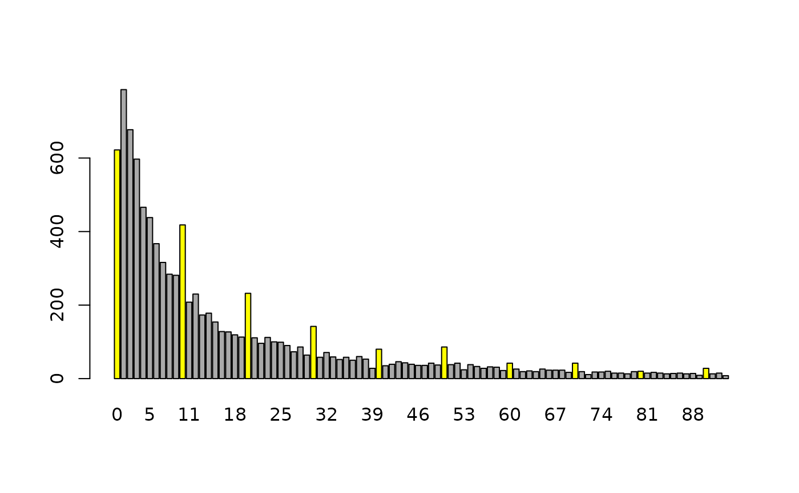
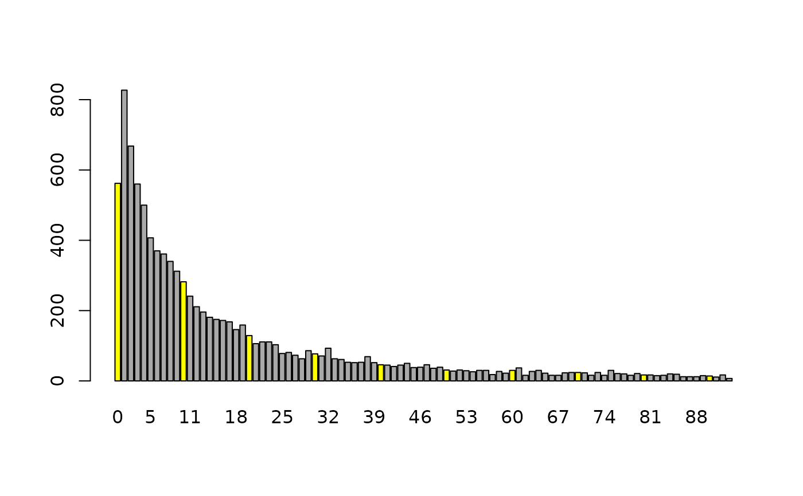
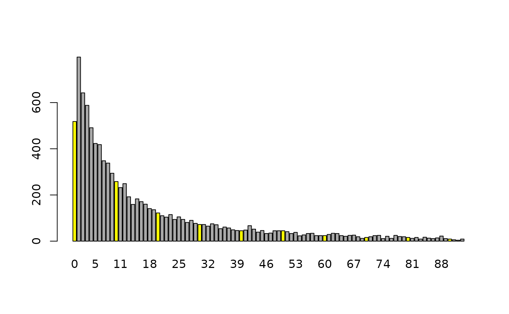

Correct for age heaping using truncated (log-)normal distributions
correctHeaps(x, heaps = "10year", method = "lnorm", start = 0, fixed = NULL)Arguments
- x
numeric vector
- heaps
5year: heaps are assumed to be every 5 years (0,5,10,...)10year: heaps are assumed to be every 10 years (0,10,20,...)
- method
a character specifying the algorithm used to correct the age heaps. Allowed values are
lnorm: drawing from a truncated log-normal distribution. The required parameters are estimated using original input data.norm: drawing from a truncated normal distribution. The required parameters are estimated using original input data.unif: random sampling from a (truncated) uniform distribution
- start
a numeric value for the starting of the 5 or 10 year sequences (e.g. 0, 5 or 10)
- fixed
numeric index vector with observation that should not be changed
Value
a numeric vector without age heaps
Details
Age heaping can cause substantial bias in important measures and thus age heaping should be corrected.
For method “lnorm”, a truncated log-normal is fit to the whole age distribution. Then for each age heap (at 0, 5, 10, 15, ...) random numbers of a truncated log-normal (with lower and upper bound) is drawn in the interval +- 2 around the heap (rounding of degree 2) using the inverse transformation method. A ratio of randomly chosen observations on an age heap are replaced by these random draws. For the ratio the age distribution is chosen, whereas on an age heap (e.g. 5) the arithmetic means of the two neighboring ages are calculated (average counts on age 4 and age 6 for age heap equals 5, for example). The ratio on, e.g. age equals 5 is then given by the count on age 5 divided by this mean This is done for any age heap at (0, 5, 10, 15, ...).
Method “norm” replace the draws from truncated log-normals to draws from truncated normals. It depends on the age distrubution (if right-skewed or not) if method “lnorm” or “norm” should be used. Many distributions with heaping problems are right-skewed.
Method “unif” draws the mentioned ratio of observations on truncated uniform distributions around the age heaps.
Repeated calls of this function mimics multiple imputation, i.e. repeating this procedure m times provides m imputed datasets that properly reflect the uncertainty from imputation.
References
M. Templ, B. Meindl, A. Kowarik, A. Alfons, O. Dupriez (2017) Simulation of Synthetic Populations for Survey Data Considering Auxiliary Information. Journal of Statistical Survey, 79 (10), 1--38. doi: 10.18637/jss.v079.i10
Examples
## create some artificial data
age <- rlnorm(10000, meanlog=2.466869, sdlog=1.652772)
age <- round(age[age < 93])
barplot(table(age))

## artificially introduce age heaping and correct it:
# heaps every 5 years
year5 <- seq(0, max(age), 5)
age5 <- sample(c(age, age[age %in% year5]))
cc5 <- rep("darkgrey", length(unique(age)))
cc5[year5+1] <- "yellow"
barplot(table(age5), col=cc5)
 barplot(table(correctHeaps(age5, heaps="5year", method="lnorm")), col=cc5)

# heaps every 10 years
year10 <- seq(0, max(age), 10)
age10 <- sample(c(age, age[age %in% year10]))
cc10 <- rep("darkgrey", length(unique(age)))
cc10[year10+1] <- "yellow"
barplot(table(age10), col=cc10)

barplot(table(correctHeaps(age10, heaps="10year", method="lnorm")), col=cc10)

# the first 5 observations should be unchanged
barplot(table(correctHeaps(age10, heaps="10year", method="lnorm", fixed=1:5)), col=cc10)

barplot(table(correctHeaps(age5, heaps="5year", method="lnorm")), col=cc5)

# heaps every 10 years
year10 <- seq(0, max(age), 10)
age10 <- sample(c(age, age[age %in% year10]))
cc10 <- rep("darkgrey", length(unique(age)))
cc10[year10+1] <- "yellow"
barplot(table(age10), col=cc10)

barplot(table(correctHeaps(age10, heaps="10year", method="lnorm")), col=cc10)

# the first 5 observations should be unchanged
barplot(table(correctHeaps(age10, heaps="10year", method="lnorm", fixed=1:5)), col=cc10)
